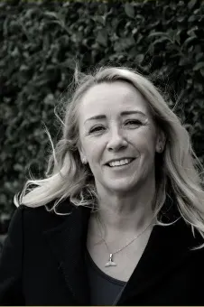

Verbinden met jezelf,
je hart, je essentie.
Holistische praktijk in Den Haag.
Plan een afspraakIn balans zijn bestaat eigenlijk niet. Jezelf in balans houden kan wel, en het hart is daarbij het centrum.
Wij leven in een turbulente maar prachtige tijd in dit universum. Toch ervaart de één het leven als een feest en de ander heeft er moeite mee. Balans in ons leven bestaat uit 5 aspecten; fysiek, mentaal, emotioneel, spiritueel en energetisch en deze 5 aspecten zijn allemaal met elkaar verbonden.
In deze tijd zijn we meer dan ooit op zoek naar balans in ons leven. Maar wat is balans, wanneer zijn we in balans, de weegschaal kan toch niet altijd in het midden staan. Als we in het midden blijven, staan we stil.
Ontdek de behandelingenTerug naar jezelf.
Fysiek · mentaal · emotioneel · spiritueel · energetischIn balans zijn bestaat eigenlijk niet maar jezelf in balans houden kan wel. Door allerlei factoren van buitenaf die invloed hebben op jouw leven raak je uit balans en dat hoort bij het leven. Het belangrijkste hierin is, hoelang ben je uit balans of beter gezegd hoelang duurt het voordat je weer terug bent bij jezelf, zodat je jezelf in balans kan houden. Het hart is hierbij cruciaal, Het hart is het centrum om verbinding te krijgen met onze essentie en om terug te komen bij jezelf.
Behandelingen
Vanuit het hart, met aandacht voor het geheel: fysiek, mentaal, emotioneel, spiritueel en energetisch.
Bekijk de tarievenBodyscan
Preventie is de sleutel voor een goede gezondheid: disbalansen vroegtijdig opsporen.
Mycotherapie
Medicinale paddestoelen uit de Traditionele Chinese Geneeskunde.
QM Hypnose
Quantum Manifestatie Hypnose, ervaren wie je ten diepste bent.
Biofotonen
Biofotonentherapie, een behandeling met licht.

Linda Vos
Oprichtster van Reconnect & Balance
Ik ben geboren en getogen in Rotterdam en moeder van 2 dochters. Op jonge leeftijd kwam ik al in aanraking met healing en wist dat dit mijn passie was…
Lees meer over Linda